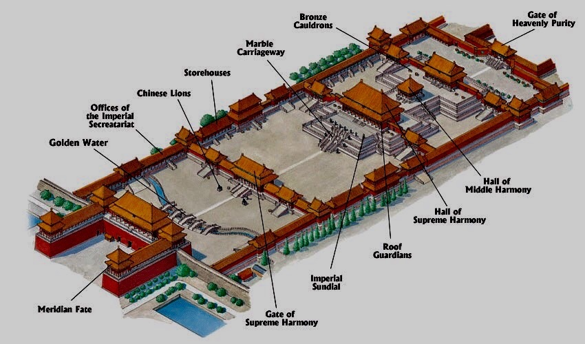

About 5 years ago, I was sick of going to somewhere tropical only for my parents to get drunk and I get to do nothing really fun or get to really explore and take in culture so I decided one day that I'd tell my parents that maybe we should consider other places to vacation and asked if we could go to China to get a complete culture shock and learn so many new things about a place we really don't know much about. Turns out they loved the idea so much that we started planing where in China we could explore and got our visas as fast as possible. We settled on Beijing, Shanghai, and Hong Kong as our 3 cities to tour on our 2 weeks vacation.
After the literal Day long flight (the layover did take us 2 hours but still pretty much a day long flight) we arrived in Beijing only to be blown away at all the high rise building alongside some very historical and important buildings. We checked out the Forbidden City which is where the emperor would have lived and since the overtaking of the current government, is where the large painting of Chairman Mao is currently hung up. It was so huge and beautiful that we were blown away. Below is a diagram showing casing just how big it is (it is copyright free)
I've always loved computer games as a kid and remember playing the old Command and Conquer and Warcraft 3. Fast foward a bit, I convinced my parents to get a brand new PC since the old one took forever to pull up anything. I made a steam profile and looked around at all the games I could play. I remember talking to my friends and seeing that the game Dota 2 was free to play and popular, so I naturally I asked them "you guys want to try this out together?" that was all the way back in 2013 and as of turning in this assignment I have 7,773K hours into that game. You would think with that many hours you would think I'm good at the game, while I think I am better than the average player, I'm not anywhere near the level I wish I was. Down below I added my steam profile for you to check out and explore what I play
Check out my Steam Profile.A relaxing video of waves crashing into an island of sorts
A copyright free song that starts off with some standard bass, very light and peppy